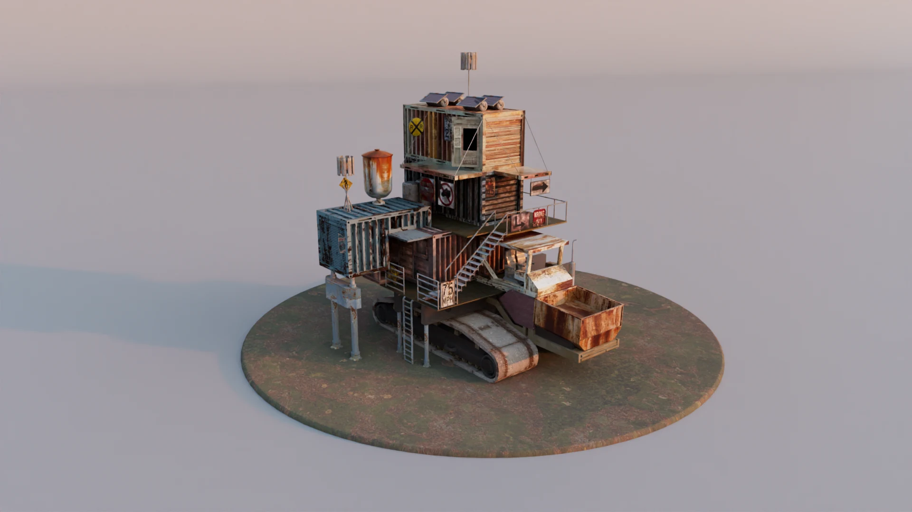
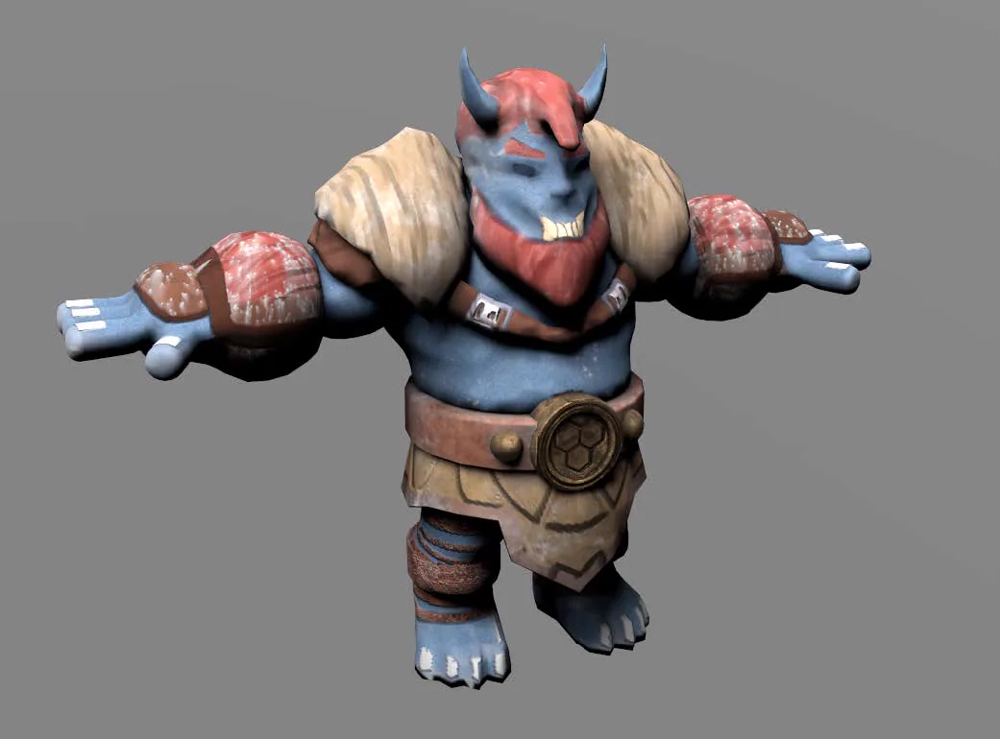
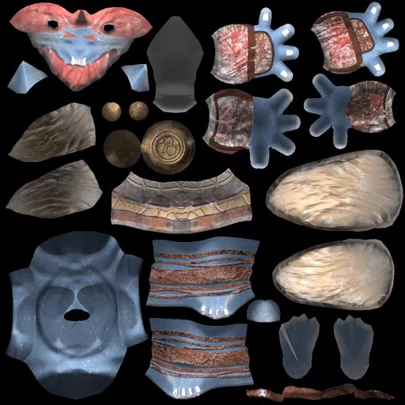
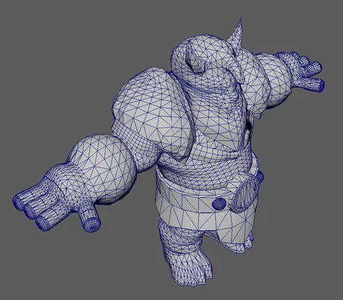
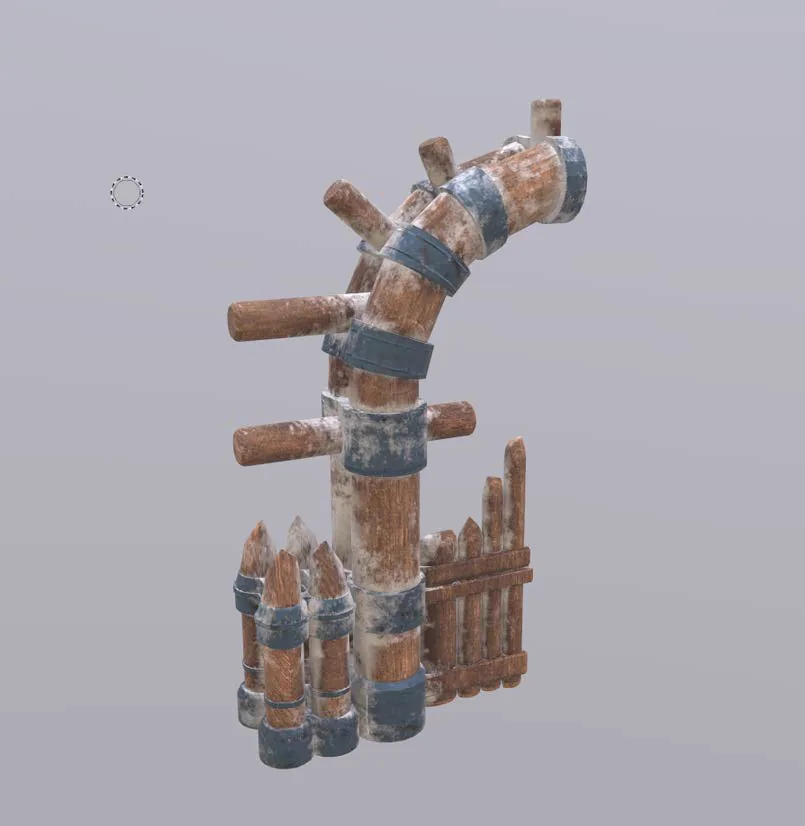
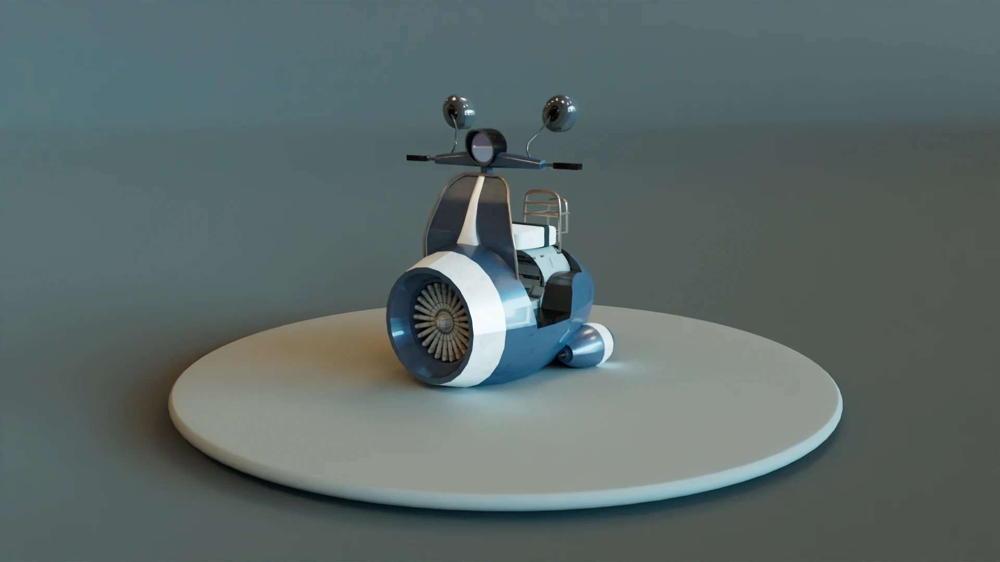
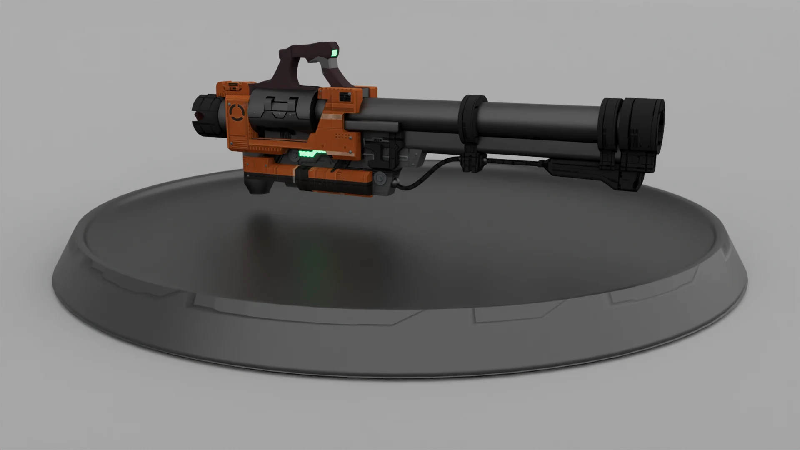
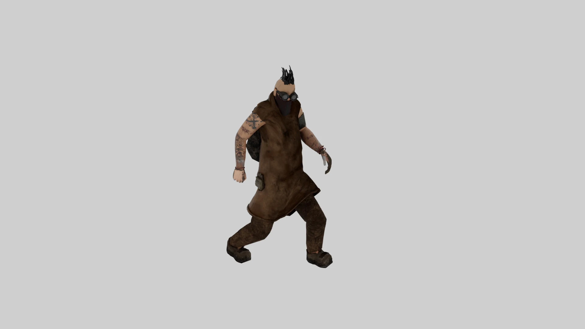

Character & Environment Modeling
A collection of hard-surface models, character designs, and rendering experiments.
Overview
A set of 3D art studies grouped by pipeline rather than by project: hard-surface props, one stylised character carried from topology through to a lit render, and an environment scene assembled out of the modular props. Most of the work was built in Maya. The individual pieces are presented on a plain turntable stage on purpose — with no set dressing to lean on, the silhouette and the material have to carry the read.
Character, End to End
The horned character is the one asset taken through every stage, and the gallery shows the stages side by side instead of only the finished frame. The wireframe view exposes where the polygon budget went: density is concentrated at the shoulders, elbows, knees and face, and kept low across flat armour plates. The UV layout doubles as the texture sheet — face, fur, belt, plates and hands are unwrapped and hand-painted as one atlas, so a single material covers the whole body. Laying it out this way makes the trade-off visible: where geometry pays for the form, and where painted detail stands in for it.
Hard-Surface Props and the Scene
Three hard-surface pieces — a scrap-built container tower, a single-wheel vehicle, and a heavy weapon — each modelled as a self-contained asset. The container tower is the one that pays off twice: the same stacked-unit, scaffold and walkway vocabulary is reused at scale to build the abandoned yard in the final sequence, which is why it is modelled as modules rather than as a single mesh.
Gallery







